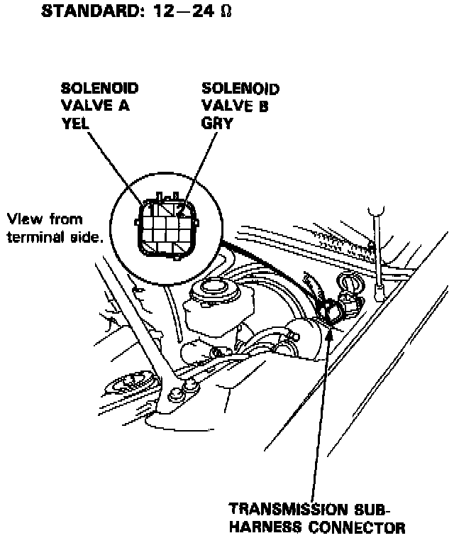
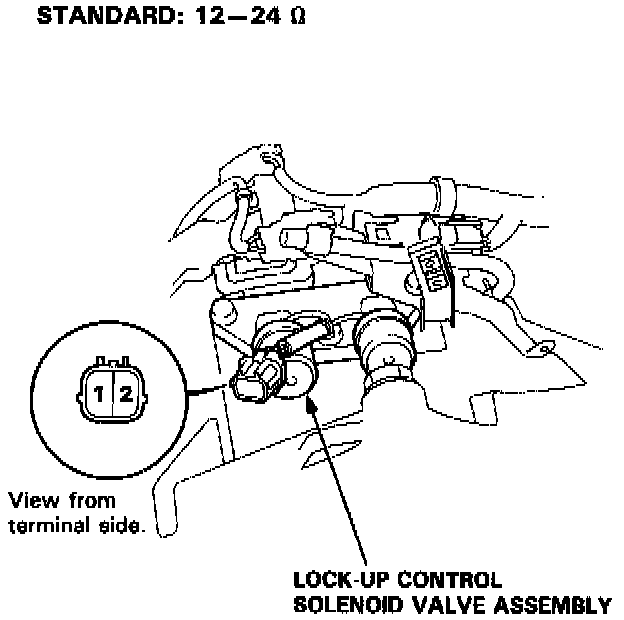

Torque Converter Clutch Solenoid: Testing and Inspection
NOTE: Lock-up control solenoid valves A and B must be removed/replaced as an assembly.1. Disconnect the transmission sub-harness connector.

2. Measure the resistance between the No.1 terminal (solenoid valve A) of the transmission sub-harness connector and body ground and between the No.2 terminal (solenoid valve B) and body ground.
3. If the resistance is out of specification, disconnect the 2P connector from the lock-up control solenoid valve A/B.

4. Measure the resistance between the No.1 terminal (solenoid valve A) of the lock-up control solenoid valve connector and body ground and between the No.2 terminal (solenoid valve B) and body ground.
5. If the resistance is OK, replace the transmission sub- harness.
6. Replace the lock-up control solenoid valve assembly if the resistance is out of specification.
7. If the resistance is within the standard, connect the No.1 terminal of the lock-up control solenoid valve connector to the battery positive terminal. A clicking sound should be heard. Connect the No.2 terminal to the battery positive terminal. A clicking sound should be heard. Replace the lock-up control solenoid valve assembly if no clicking sound is heard.